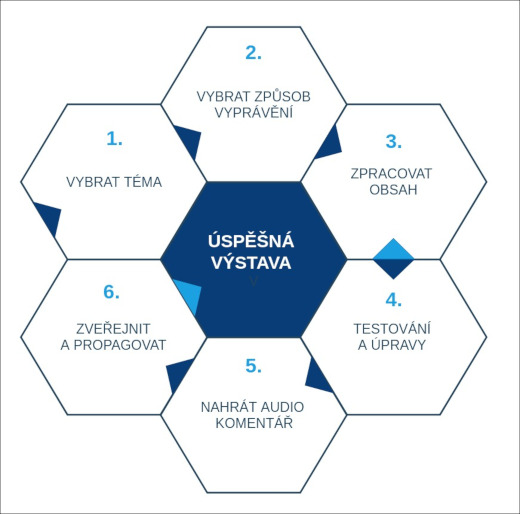

Jak vytvořit atraktivní obsah virtuální výstavy#
Virtuální výstava je online prezentace vybraného tématu. Při její tvorbě plníte jednotlivé obrazovky obsahem - např. textem, přidáváte hudbu, namluvený komentář, obrázky nebo pro návštěvníky připravíte hry.
Obrazovky je možné sdružovat do kapitol nebo je možné výstavu sestavit z jednotlivých obrazovek jdoucích po sobě. Oba principy můžete kombinovat.
Doporučený postup tvorby virtuálních výstav#

- Výběr tématu (Buďte co nejkonkrétnější, přemýšlejte o návštěvníkovi, jaký je, co ho zajímá, kde na výstavu narazil. Pomoci vám může 10 podnětů k zamyšlení).
- Vybrat způsob vyprávění (Jak budete obsah členit, jak budete téma rozvíjet a členit, použijete kapitoly? Jak budou jednotlivé části obsáhlé?).
- Začněte pracovat na obsahu (Ke každé části napište potřebné texty. Najděte obrázky. Zkuste texty nahradit jinými formami obsahu - videem, obrázky, fotogalerií či hrou. Zkuste využít co nejvíce možností, které nástroj nabízí. Jaká část obsahu je hlavní a co jsou dodatečné materiály ke stažení?)
- Testování (Poproste někoho, kdo není z oboru o jeho názor, ptejte se, čemu nerozumí a podle jeho postřehů upravte texty a ostatní obsah. Opravdu návštěvník stráví na výstavě tolik času, kolik jste naplánovali?).
- Z finálních textů namluvte audio komentář pro "prezentační mód".
- Zveřejněte výstavu.
Předtím, než začnete#
Před samotnou prací s nástrojem INDIHU Exhibition si dobře promyslete obsah výstavy. Využívání nástroje bude účelnější a přímočařejší. Konzultujte své nápady s kolegy a přáteli. Zvláště, pokud jste doposud žádnou výstavu nedělali, doporučujeme zodpovězení následujících 10 otázek:
Co téma návštěvníkovi přinese?#
Maximálně 10 větami shrňte, o čem výstava je. Co návštěvníkovi přinese a proč by jí měl věnovat čas. Buďte konkrétní, zkuste se vyhnout obecným prohlášením. Dejte 10 vět přečíst pár lidem a vyslechněte si jejich názor.
Komu je výstava určena?#
Co návštěvník o tématu ví a co mu výstava přinese nového? Popište, jaký návštěvník je. Je-li to např. vysokoškolský student, jaký obor studuje, na jaké chodí přednášky? Má zjistit, že téma existuje nebo si prohloubit znalosti? Všeobecně definová cílová skupina "laik" nebo "odborník" vám příliš nepomůže.
Dokážete vzbudit zájem chytlavým titulkem?#
Název má přilákat pozornost. Přistupujte k němu jako k titulku na obalu časopisu. Věnujte pozornost stylu textů. Buďte spíše neformální, vyvarujte se výrazů, které nemusí být obecně známé nebo je jejich výklad problematický.
Je téma aktuální?#
Aktuální téma má větší šanci, že návštěvníky zaujme. Vztahuje se téma k nějakému výročí, dokážete ho propojit s nějakým aktuálně diskutovaným tématem, které hýbe společností? Zkuste najít způsoby, jak historické nebo odborné téma propojit s něčím, co je současnému člověku známé. Hledejte příklay a srovnání se současnou realitou.
Jak budete členit obsah?#
Ujasněte si jednotlivé tematické celky. Jak na sebe témata navazují, co je hlavní téma a co vedlejší? Podívejte se na výstavu jako na příběh, který má hlavního hrdinu. Jaké hrdina překonává překážky? Co jsou zlomové okamžiky, u kterých se návštěvníkům může tajit dech? Jak příběh dopadne? Zvažte, zda je nejlepší řazení po tématech, nebo zda je vhodné chronologické uspořádání nebo zda koncipujete výstavu jako výběr zajímavostí bez většího propojení. Zkuste několik variant a zeptejte se svých přátel, co jim přijde nejzajímavější?
Kolik času návštěvníkovi výstava zabere?#
Kolik času má návštěvník na výstavě celkově strávit? Kolik času stráví čtením / hraním her / poslechem? Pomůže vytvořit časovou osu výstavy. V jaké situaci by měl návštěvník výstavu projít - po cestě tramvají na telefonu nebo v klidu doma u počítače? Zkuste tomu přizpůsobit obsah. Během cesty tramvají návštěvník spíše stojí o "něco lehčího k pobavení", o zajímavosti. Naopak serióznější a vážnější obsah vyžaduje klid na soustředěné procházení obsahu.
Jakých 5 informací si návštěvník odnese?#
Definujte 5 informací (faktů), které se má návštěvník dozvědět a ideálně zapamatovat. Napište je jako konkrétní krátké tvrzení (např. "Husité nebyli kompaktní skupina, ale více různých odnoží"). Těmto nejdůležitějším informacím věnujte pozornost - můžete informace zopakovat vícekrát v jiné formě a tím zvýšíte šanci, že si návštěvník tuto konkrétní věc zapamatuje.
Co návštěvník na konci cítí?#
Má být na konci návštěvník překvapený, veselý, smutný, má se mu ulevit, že „to dobře dopadlo“? Nebo se má cítit povzneseně, že se dobře bavil? Zkuste se zamyslet na celkovým vyzněním virtuální výstavy.
Jak pestrý dokážete vytvořit obsah?#
Co máte k dispozici a co můžete vytvořit? Máte text, obrázky, jaké typy obrázků, máte video, audio? Máte informace, které by bylo možné znázornit graficky pomocí grafů či nákresů? Máte někoho, kdo vám může s přípravou materiálů pomoci aby byl co nejpestřejší?
Kdo a jak může výstavu využít?#
Budou výstavu procházet individuální návštěvníci na internetu? Jak se o ní dozvědí? Je výstava určena pro využití ve škole? V jakém předmětu a na jakém stupni? Jaké jsou možnosti dalšího zkoumání tématu (návštěva muzea, četba)?
Jak udělat výstavu co nejzajímavější#
Návštěvníci jsou zvyklí na nápadité, vizuálně atraktivní webové prezentace. Abyste docílili co největšího účinku, zkuste být v tvorbě obsahu co nejnápaditější. Můžete využít následující nápady.
O jakých lidech vyprávíte příběh?
Říká se, že příběhy nejsou o předmětech, ale o lidech. Zkuste se proto na své téma zamyslet očima lidí, kterých se týkalo. Tvoříte-li například výstavu o knížkách, začněte tím, že si napíšete seznam co nejvíce sloves, které se ke knížce váží - číst, psát, tisknout, ilustrovat, prodávat, distribuovat, sbírat, půjčovat, studovat... Ze sloves snadno vytvoříte lidi, kteří mohou být aktéry našeho příběhu - čtenář, spisovatel, tiskař, ilustrátor, nakladatel, knihkupec, knihovník, sběratel vzácných knih, student či pečlivý čtenář. Potom bychom se měli ptát, kdo takoví lidé v dané době byli, jak žili, jak se oblíkali, co byla jejich obživa, jaký byl jejich socio-ekonomický status a postavení ve společnosti, byla kniha jejich zdrojem obživy? Toto cvičení vám pomůže vidět předměty vaší vystavy v kontextu živých a atraktivních příběhů, které chytí návštěvníkovu pozornost.
Čím je vaše téma stále aktuální?
Zkuste téma propojit s něčím, co jě návštěvníkům blízké. S něčím, co je aktuální. Nemůže být příběh knížky zároveň příběhm o sociální nerovnosti, genderových otázkách nebo o knížce jako o statusovém předmětu, díky kterému si připadáme před svými přáteli vzdělanejší? Nebo o tématu informačního přetížení či, o způsobech trávení volného času nebo o fanouškovských komunitách nadšených čtenářů?
Méně je více
Je třeba si upřímně přiznat, že návštěvníci většinou neinvestují mnoho úsilí, aby pochopili složitě konstruované téma. Od začátku chtějí vědět, co dostanou. Virtuální výstavy jsou ideálním nástrojem jak ukázat, co děláte zajímavého, co zajímavého máte ve svých sbírkách nebo na co zajímavého jste přišli během vědeckého bádání. Cílem by mělo být vzbudit zájem návštěvníků a ne je odratit. Odradíte je tím, že nebudou rozumět, na co se koukají. Proto nepoužívejte složité odborné výrazy, dlouhé texty, střídejte tipy obsahu a nedělejte virtuální výstavu příliš dlouhou.
Komu by se vaše výstava mohla hodit?
Chcete, aby výstavu používali konkrétní lidé ke konkrétním účelům? Hodí se výstava třeba do hodin vlastivědy pro 5. třídu základní školy? Zapadá svým obsahem do vysokoškolských osnov na konkrétní škole? Dejte o ní vědět učitelům - vyberte si několik škol a napište osobně adresovaný email konkrétním pedagogům. Můžete jim připravit konkrétní obsah se zapojením výstavy pro celou vyučovací hodinu. Učitelé rádi používají atraktivní materiály, ale nemají čas je sami tvořit.
Zjistěte, zda se virtuální výstava lidem líbí: Testujte
Předávání informací veřejnosti s sebou přináší mnohá úskalí. V první řadě je těžké odhadnout, co návštěvníci o tématu vědí a co je pro ně naopak nové a zajímavé. Není nic jednoduššího, než rozpracovanou výstavu ukázat někomu, kdo není z oboru a mohl by být zástupce cílové skupiny. Nechte ho výstavu projít a ptejte se ho, co se mu líbilo, co ne, čemu nerozumněl a o čem by se chtěl dozvědět více. Zpětnou vazbu zapracujte a výsledná výstava bude lepší. Nezapoemňte, že neděláte výstavu pro sebe, ale pro druhé!
Zapojte cílovou skupinu do přípravy výstavy
Šanci na úspěch zvýšíte i tím, že již od začátku budete spolupracovat se zástupci cílové skupiny. Uspořádejte workshop, jehož účelem bude nalézt to nejlepší téma a způsob vyprávění. Vyprávějte o tématu skupince návštěvníků a ptejte se jich, coje zajímá. Pozvěte návštěvníky k vám do instituce a hledejte společně zajímá témata. Nechcete-li spolupracovat s návštěvníky přímo, uspořádejte alespoň online anketu s návrhy na virtuální výstavy a umístěte ji navašem webu a sdílejte ji přátelům. I samotný kolaborativní proces můžete vytěžit a výstavu propagovat již před jejím vytvořením a zveřejněním pomocí článků, fotek ze zákulisí nebo informování na sociálních sítích.
Příprava dat#
- Obrázky Obrázky připravujte v rozlišení minimálně full HD (1920×1080) s rozlišením 72 dpi a ve formátu .png nebo .jpg.
- Video Video připravujte v rozlišení FullHD (1920×1080), 25 snímků za vteřinu, v rendrovacím formátu H.264